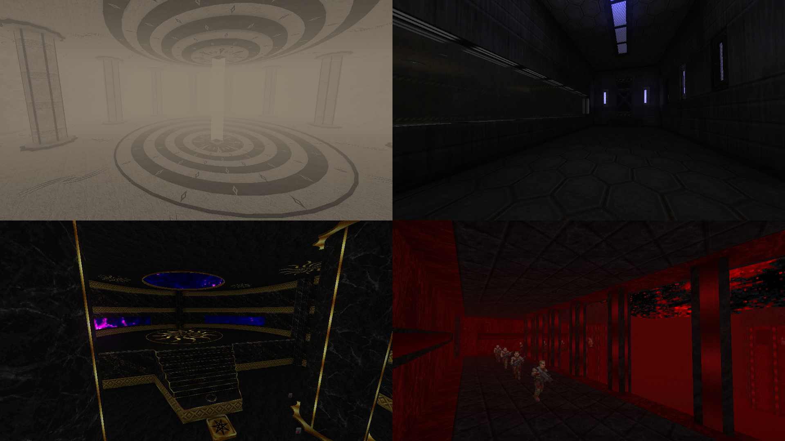

DOWNLOAD LINKS



| Year | 2020 |
| IWAD | doom2.wad |
| Source port | GZDoom |
| Game mode(s) | Single-player |
| Map(s) | MAP01-06 |
Gomorrah is a GZDoom mapset consisting of 6 brand-new maps, powered by ukiro’s amazing OTEX texture set. The general goal of the mapset is to provide a gameplay experience that combines the classic Doom gameplay experience with puzzles and a checkpoint system, all the while taking advantage of GZDoom’s feature set to provide beautiful setpieces to look at.
In Gomorrah, you’ll be traversing three different locations – an abandoned mine/techbase, a medieval castle and a fortress in Hell – in search of three skull keys. Each skull key is going to be locked behind a puzzle which you’ll have to solve. Once you have all three of them, you must use them to open a gate beyond which lies your final challenge.
In addition to new levels, Gomorrah also features semi-open progression and an original soundtrack by none other than Yours Truly.